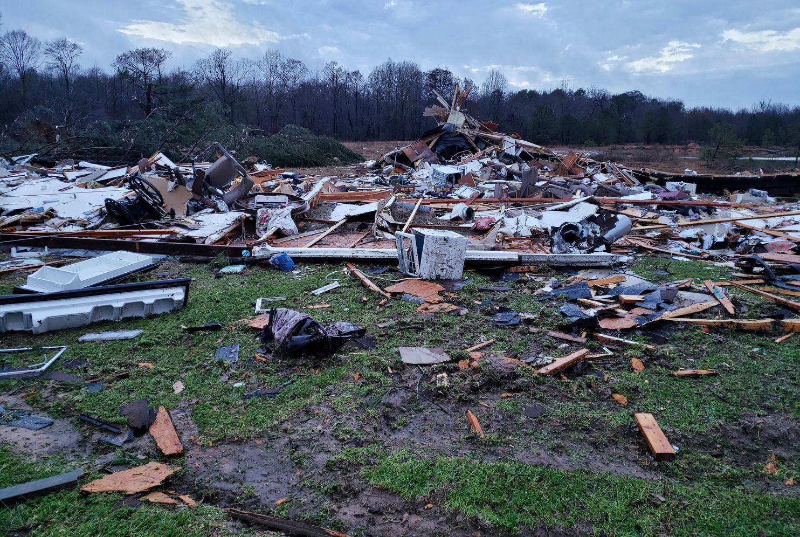

The occurrence of storms and other significant weather phenomena having sufficient intensity
to cause loss of life, injuries, significant property damage.
2 / 4

The strong wind can easily knock down trees and small buildings.
3 / 4
Frequent storm attacks can cost you a lot to recover.
4 / 4
This website can help you avoid areas where storms have trended over the past years.
❮
❯